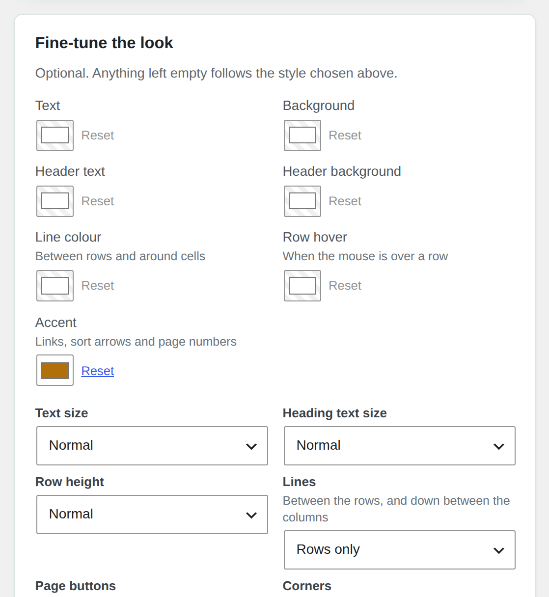
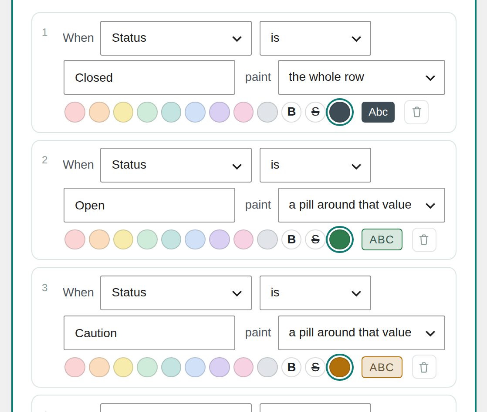
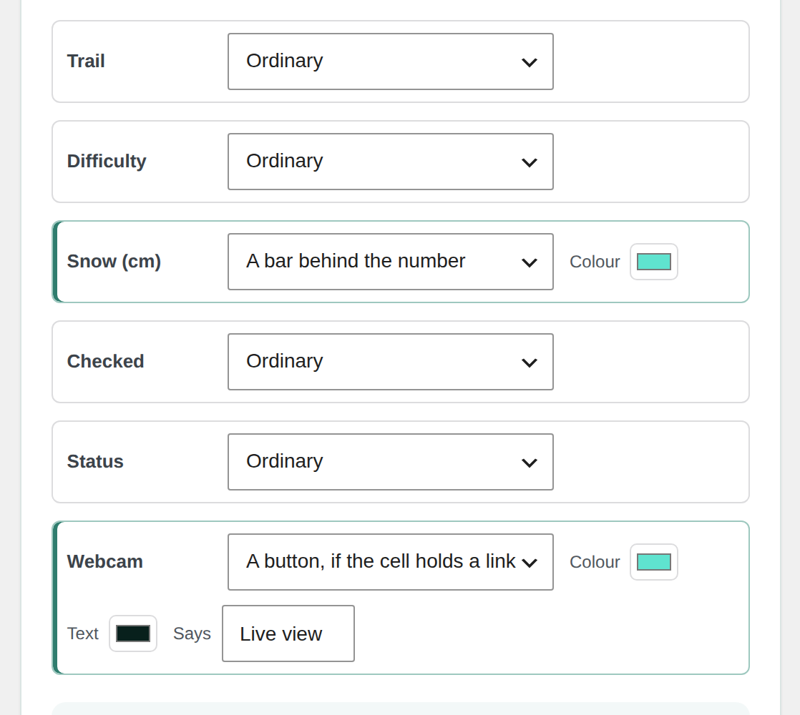

przewiń w dół
Three screens from the dashboard, on the very sheet above.
Appearance
Ten styles, then the dials
Pick a style, then disagree with it: colours one by one, text size, row height and how many lines the table draws. Everything you leave alone keeps following the style.

Colour rules
A rule reads like a sentence
When Status is Closed, paint the whole row. No formulas, no code, and the colours are worked out on the server, so they are already in the page a visitor receives.

Column looks
A column can wear something
Give a column of numbers a bar, or a column of links a button, in the colours you choose and saying what you tell it to say.
